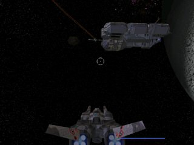

Foxpaw/Cosmic Fury
I don't like that name anymore, but I'll come up with a better one eventually.
Overview
Imagine Homeworld. Now, add in the ability to fly your ships in first person with all the fidelity of a space-shooter. Then, add the ability to custom-design ships from scratch, assembling them in any pattern you can imagine from a library of "parts" that can be designed with complete flexibility. Now, instead of a static 2-4 player strategy deathmatch, the battle takes place in a massive universe with numerous fleets, systems, and, of course, resources.
From what visual effects to use, to "stats" such as thrust, vector exhaust capability, and fuel consumption for thrusters, or damage, projectile speed, fire rate, energy draw, and more for weapons. Nearly every aspect of every part can be modified and customized by the player. Of course, the more powerful your weapons and systems, the more resources you'll need to build them...
You can mine resources and build a massive space armada, freelance for wealthier players to gain the resources to improve your custom ships, or become a pirate and raid resourcing operations to build up a nomadic pirate fleet - if you get a powerful enough fleet (either through ships with high stats, or just lots of them) you might be able to carve out your own little empire. In the meantime, you can take shelter with a larger friendly fleet and add your guns to their own.
The above basically summarises what the mod has become/is in the process of becoming. There will likely be a single player campaign/story too, but I'm not sure yet what that will be. So far progress has been steady, and the only real hurdle is obtaining a large enough server/bunch of servers to handle a "massive" universe. Also I'm not sure how I should go about having an "auto-resolve" for fleets in other areas during single-player.
Progress
First Generation
I recently found the source for generation 1, which used a custom physics system and lots of other fancy stuff. The first generation was made for UT, before UT2003 came out. It eventually ran into problems and I lost interest, only to regain interest when I got a copy of UT2003. Looking back, some parts seemed incredibly primitive, while I'm surprised by how clever some other parts of the old code were. |
![[FoxpawsGen1Hangar]](images/foxpawsgen1hangar.jpeg) |
![[FoxpawsGen1Carrier]](images/foxpawsgen1carrier.png) |
Second Generation
![[FoxpawsNebula1]](images/foxpawsnebula1.jpeg) |
Second generation was for UT2003 and used Karma. I didn't take many screenshots of this generation, unfortunately. This generation was using KVehicles. This actually worked pretty good but the transformation from being derived from KVehicle to being derived from Actor eventually ended in a complete rewrite, giving birth to the third generation.
Third Generation
![[FoxpawsGen3Backdrop1-2]](images/foxpawsgen3backdrop1-2.png) |

![[FoxpawsGen3Backdrop1]](images/foxpawsgen3backdrop1.jpeg) |
The third generation was also written for UT2003 and also used Karma. However, unlike the second generation, the third generation did not use KVehicles. Instead I wrote my own classes that utilized the Karma physics system. This generation got pretty far along but the performance was not that great due to requiring numerous workarounds to keep the Karma engine funcitoning the way I wanted it to. Eventually I dropped it and rewrote from scratch using a custom physics system, like that used in the first generation code.
Fourth Generation
Eventually I decided to rewrite from scratch for improved speed and to expand my options gameplay-wise. It took a while just to get up to the point where I was at with the third generation, but I managed to catch up and surpass it. The graphics have improved somewhat, the editor has improved a lot, and the performance has improved dramatically. This especially is good as it will allow for more ships to be flying around at once.
I was going to say, "you're probrably getting tired of seeing the same rear view of that same test fighter with the crooked fin, so here's some screenshots with other ships." However, I realized that I had only taken two screenshots with that fighter in them, so that wouldn't of really made sense.
At any rate, here's some new screenshots. Most of them have a cruiser that I slapped together. It actually looks pretty decent from most angles. I haven't made any "bridge" for it, so it's got a fighter cockpit stemming from it's front. Thusly, I've been careful not to post any pics showing it's front. 
I dislike JPEGs. This screenshot looks better on my machine. It has a capital ship in it! ![[FoxpawsCruiserTurret]](images/foxpawscruiserturret.jpeg) Turret view, plus turret. Camera has been cleverly turned to give a more visually appealing side view instead of the normal rear view. ![[FoxpawsCruiserSide]](images/foxpawscruiserside.jpeg) Cruiser shooting at something small and pesky. Note crooked fin and unsightly clipping on hilariously outdated placeholder model! ![[FoxpawsCruiserVsFighters]](images/foxpawscruiservsfighters.jpeg) Small team of fighters in an unfair fight. Note crooked fin (sans clipping) on hilariously outdated placeholder model! ![[FoxpawsRVGun]](images/foxpawsrvgun.jpeg) Kind of an old screenshot, but I forgot to post it up here so that's an excuse to pawn it off as new. |
Fifth Generation
![[FoxpawsDrunkenMissiles]](images/foxpawsdrunkenmissiles.png) |
![[FoxpawsCloseInFrigates]](images/foxpawscloseinfrigates.png) ![[Foxpaws2on3]](images/foxpaws2on3.png) |
The ill-fated, possibly final generation of the mod. This one was turning out very good and I didn't see any way it could be improved, but unfortunately all the data was lost as a result of harddrive failure. The backups were also lost recently before this in an unfortunate coincidence. If there is ever a sixth generation, it will likely be very similar to this one code-wise.
MythOpus: Any chance you'll ever rebuild this baby? I've actually dreamt of playing it...
T-1 not logged in: I would LOVE to see this, it'd make me reinstall UT.